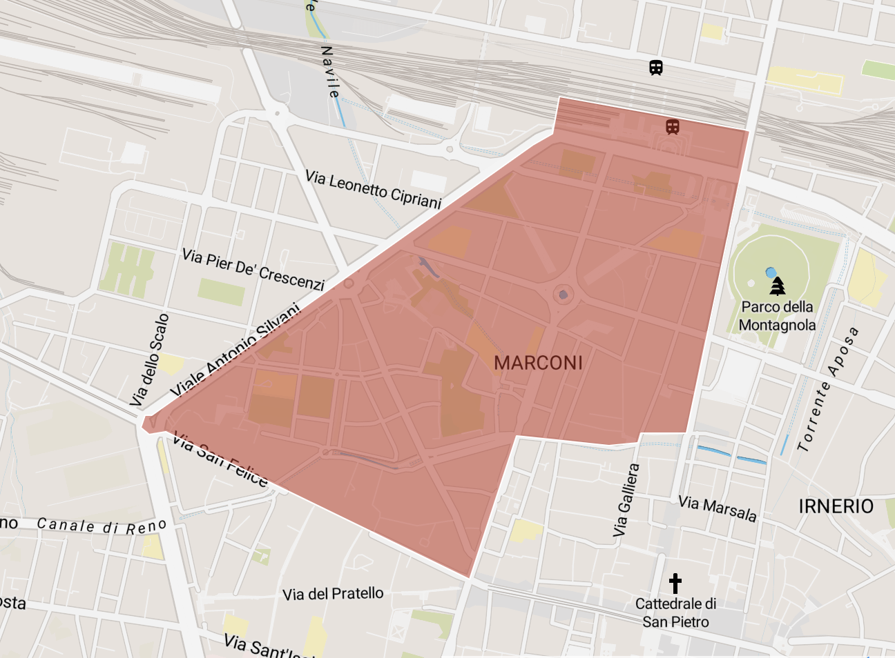
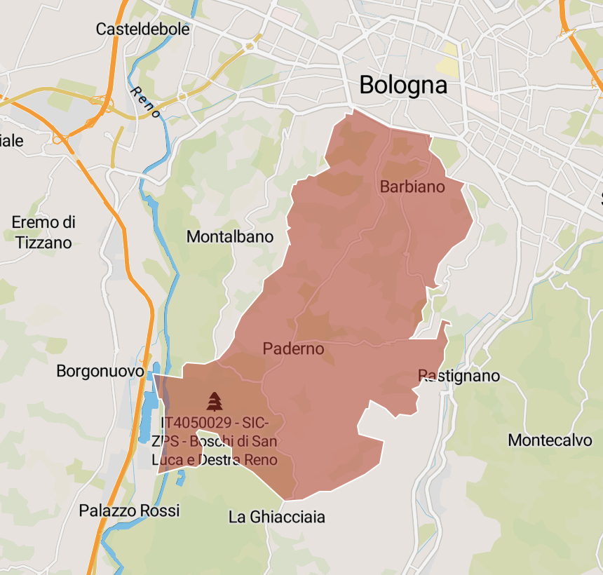
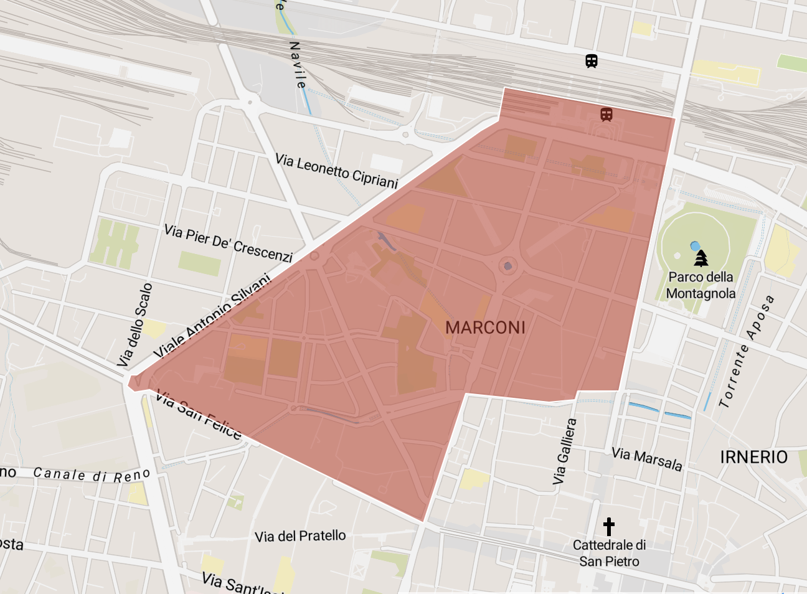
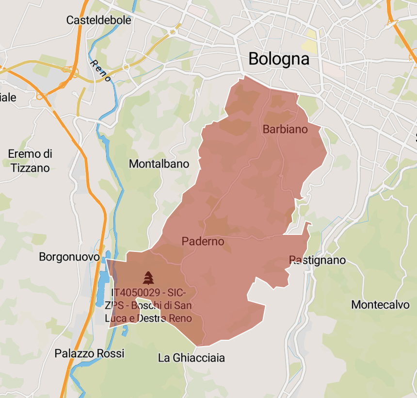

Eventi nella categoria: istituzioni
Naviga per Zona di Prossimità:
 BEVERARA (1 eventi)
BEVERARA (1 eventi)
 BOLOGNINA (2 eventi)
BOLOGNINA (2 eventi)
 CIRENAICA - MASSARENTI - SCANDELLARA (1 eventi)
CIRENAICA - MASSARENTI - SCANDELLARA (1 eventi)
 Fuori Bologna (12 eventi)
Fuori Bologna (12 eventi)
 GALVANI (16 eventi)
GALVANI (16 eventi)
 IRNERIO (23 eventi)
IRNERIO (23 eventi)
 MALPIGHI (11 eventi)

MARCONI (11 eventi)

OSSERVANZA - PADERNO (1 eventi)
MALPIGHI (11 eventi)

MARCONI (11 eventi)

OSSERVANZA - PADERNO (1 eventi)
 SAN DONATO VECCHIO (5 eventi)
SAN DONATO VECCHIO (5 eventi)
 SANTA VIOLA (2 eventi)
SANTA VIOLA (2 eventi)
 SARAGOZZA - SAN LUCA (3 eventi)
SARAGOZZA - SAN LUCA (3 eventi)
Zona di Prossimità: BEVERARA
Penelope Chiara Cocchi. Cosmic Syntropy
progetto | 3 febbraio 2024 su prenotazione: https://registrazioneeventi.cnr.it/event/47/
Zona di Prossimità: BEVERARA
Indirizzo: Via Gobetti 101, 40129 Bologna
Area Statistica: CNR
Zona di Prossimità: BOLOGNINA
Christian Boltanski. A proposito di Ustica
installazione permanente
Zona di Prossimità: BOLOGNINA
Indirizzo: Via del Saliceto 3/22 40100 Bologna
Area Statistica: VIA FERRARESE
Stefano Non. das.07 TEMPI NUOVI | CUBO Porta Europa
Doppia mostra personale + Public Program | opening giovedì 1 febbraio 2024 h 18-23.30
Zona di Prossimità: BOLOGNINA
Indirizzo: Piazza Vieira de Mello, 3 e 5 - Bologna
Area Statistica: VIA FERRARESE
Zona di Prossimità: CIRENAICA - MASSARENTI - SCANDELLARA
Stefano Non. das.07 TEMPI NUOVI | CUBO Torre UNIPOL
Doppia mostra personale + Public Program | opening giovedì 1 febbraio 2024 h 18-23.30
Zona di Prossimità: CIRENAICA - MASSARENTI - SCANDELLARA
Indirizzo: via Larga 8 - Bologna
Area Statistica: VIA LARGA
Zona di Prossimità: Fuori Bologna
Dietro tutte le cose
Mostra collettiva di M. Mandorlini, G. Mallardo, A. Aprile, A. Risaliti, A. Diacci, G. Franzin, F. Grilli, A. Ricci, I. Soraperra e M. Wang. opening venerdì 7 febbraio 2025 h 18-21
Zona di Prossimità: Fuori Bologna
Indirizzo: Vicolo Malgrado 3/2 - Bologna
Area Statistica: Fuori Bologna
Fondazione Collegio Artistico Venturoli. Open Studio
progetto | opening 3 febbraio 2024 h 16
Zona di Prossimità: Fuori Bologna
Indirizzo: Via Centotrecento, 4, 40126 Bologna BO
Area Statistica: Fuori Bologna
Fondazione Massimo e Sonia Cirulli. Radio Design. L’evoluzione estetica degli apparecchi radiofonici
Progetto
Zona di Prossimità: Fuori Bologna
Indirizzo: via Emilia 275 San Lazzaro di Savena BO
Area Statistica: Fuori Bologna
Gino Pellegrini / allievi Accademia di Brera. Intrecci
mostra collettiva
Zona di Prossimità: Fuori Bologna
Indirizzo: via Contessa Matilde 10, Loc. Bazzano – Valsamoggia
Area Statistica: Fuori Bologna
Giovanna Caimmi - Giulia Dall’Olio. CONTATTI INDICIBILI
mostra collettiva | opening venerdì 26 gennaio h 17.30
Zona di Prossimità: Fuori Bologna
Indirizzo: Via Manzoni, 4 40121 Bologna
Area Statistica: Fuori Bologna
Giovanni Morbin. Indispensabile
mostra personale
Zona di Prossimità: Fuori Bologna
Indirizzo: Via dell’Archiginnasio 2 - Bologna
Area Statistica: Fuori Bologna
Isabella Tortola - Debora Vrizzi. Blinding Plan: the minimalism of art
Mostra collettiva | Vernissage 5 Febbraio dalle ore 16.00 alle 22.00
Zona di Prossimità: Fuori Bologna
Indirizzo: via Valdonica 1/5 - Bologna
Area Statistica: Fuori Bologna
La Coscienza di do ut do in mostra presso Fondazione Cirulli
mostra collettiva
Zona di Prossimità: Fuori Bologna
Indirizzo: via Emilia 275 - 40068 San Lazzaro di Savena (BO)
Area Statistica: Fuori Bologna
Pierpaolo Campanini. Miraggio
mostra personale | domenica 21 gennaio h 11
Zona di Prossimità: Fuori Bologna
Indirizzo: Via Rizzoli 4 e 6 Pieve di Cento (Bo)
Area Statistica: Fuori Bologna
Pierre Berthet , Giuseppe Chiari, Enrico Malatesta, Baudouin Oosterlynck, Fabrizio Perghem, Milena Rossignoli, Fabiano Vicentini. Sound: inside and outside of the body
mostra collettiva | opening sabato 27 gennaio h 17-23 | finissage sabato 9 marzo h 17-21
Zona di Prossimità: Fuori Bologna
Indirizzo: Via Borgo di Colle Ameno n.32, Sasso Marconi
Area Statistica: Fuori Bologna
Roberto Cerè. Pensieri di natura visibile
Mostra personale | opening venerdì 31 gennaio 2024 h 19
Zona di Prossimità: Fuori Bologna
Indirizzo: Via Contessa Matilde, 10 - Valsamoggia
Area Statistica: Fuori Bologna
The Last Lamentation
opera video
Zona di Prossimità: Fuori Bologna
Indirizzo: via della Certosa 18
Area Statistica: Fuori Bologna
Zona di Prossimità: GALVANI
Alessandro Bergonzoni. Il tavolo delle trattative
Progetto | opening mercoledì 5 febbraio 2025 h 13 finissage 10 febbraio 2025 h 19
Zona di Prossimità: GALVANI
Indirizzo: via Castiglione, 8 40124 Bologna
Area Statistica: GALVANI-1
Attività speciale di mediazione alla mostra di Alessandra Spranzi
mediazione nelle sale
Zona di Prossimità: GALVANI
Indirizzo: Via Fondazza 36 Bologna
Area Statistica: GALVANI-2
CANEMORTO. The Painting Race
mostra personale | opening 25 gennaio 2024 h 19-22
Zona di Prossimità: GALVANI
Indirizzo: via Santo Stefano 43 - Bologna
Area Statistica: GALVANI-2
Chiara Fumai: Inviting Evil Spirits
mostra personale | opening 1 febbraio 2024 h 18-22
Zona di Prossimità: GALVANI
Indirizzo: via del Piombo, 5 - Bologna
Area Statistica: GALVANI-2
Collegio dei Fiamminghi ‘Jean Jacobs’ . Il Collegio riscoperto: il patrimonio dei Fiamminghi si mostra alla città
mostra collettiva | opening venerdì 2 febbraio 2024 h 18
Zona di Prossimità: GALVANI
Indirizzo: Via Guerrazzi n. 20, Bologna (BO)
Area Statistica: GALVANI-2
Fragmented Nations (on dropping bomb*shells)
mostra | inaugurazione venerdì 7 febbraio h 17
Zona di Prossimità: GALVANI
Indirizzo: Piazza Carducci 5 Bologna
Area Statistica: GALVANI-2
Guido Piacentini. Immaginario
Mostra personale | Sempre visibile dall'esterno
Zona di Prossimità: GALVANI
Indirizzo: Piazza Maggiore, Bologna
Area Statistica: GALVANI-1
Jason Hendrick Hansma. In Our Real Life (Waves)
Mostra personale | opening mercoledì 5 febbraio 2025 h 20
Zona di Prossimità: GALVANI
Indirizzo: Via Santo Stefano 43, Bologna
Area Statistica: GALVANI-2
Meredith Monk. Bloodline Shrine
mostra personale
Zona di Prossimità: GALVANI
Indirizzo: Via della Braina 11, Bologna
Area Statistica: GALVANI-2
Morandi metafisico. Tre disegni. Una storia
mostra
Zona di Prossimità: GALVANI
Indirizzo: Via Fondazza 36, Bologna
Area Statistica: GALVANI-2
Patrick Tuttofuoco. ABBANDONA GLI OCCHI
mostra personale | opening 30 gennaio 2024 h 18-22
Zona di Prossimità: GALVANI
Indirizzo: Piazza Minghetti 4/d, Bologna
Area Statistica: GALVANI-1
Peggy Franck. In a Naked Room
Mostra personale | Opening martedì 4 febbraio 2025 h 18-22
Zona di Prossimità: GALVANI
Indirizzo: Piazza Minghetti 4/D - Bologna
Area Statistica: GALVANI-1
Pirro Cuniberti. 12 teste 3 cani 1 topo
mostra
Zona di Prossimità: GALVANI
Indirizzo: Via dell’Archiginnasio 2 - Bologna
Area Statistica: GALVANI-1
Sabrina Mezzaqui. I quaderni di Hannah Arendt
Mostra personale | Opening sabato 8 febbraio 2025 h 18finissage giovedì 13 febbraio 2025 h 17 (con letture da/su Hannah Arendt)
Zona di Prossimità: GALVANI
Indirizzo: via del Piombo 5 - Bologna
Area Statistica: GALVANI-2
The Crossing Threads. Concert for a Dress
mostra collettiva | opening martedì 30 gennaio 2024 h 18
Zona di Prossimità: GALVANI
Indirizzo: Vicolo Mariscotti, 4 Bologna
Area Statistica: GALVANI-2
World Press Photo Exhibition 2023
mostra
Zona di Prossimità: GALVANI
Indirizzo: Bologna
Area Statistica: GALVANI-1
Zona di Prossimità: IRNERIO
Agostino Iacurci. garage BENTIVOGLIO | Ruinenlust, 2024
mostra personale
Zona di Prossimità: IRNERIO
Indirizzo: via del Borgo di San Pietro 3/A
Area Statistica: IRNERIO-2
Alfredo Pirri. Ritratto di Palazzo
Mostra personale | opening lunedì 3 febbraio 2025 (su invito)
Zona di Prossimità: IRNERIO
Indirizzo: Via del Monte, n°8, Bologna
Area Statistica: IRNERIO-1
Andrea Corvino (LOL 63). Non c'è valore senza ricerca'
presentazione
Zona di Prossimità: IRNERIO
Indirizzo: via San Michele 4/C - Bologna
Area Statistica: IRNERIO-1
Corneraholic 4
mostra collettiva
Zona di Prossimità: IRNERIO
Indirizzo: Via Zamboni, 63, Bologna
Area Statistica: IRNERIO-2
Davide Fabio Colaci Studio. Felicissime stanze
progetto
Zona di Prossimità: IRNERIO
Indirizzo: Via del Borgo di San Pietro, Bologna
Area Statistica: IRNERIO-2
Ditraverso. LEGGERE CREATURE
Performance | Opening 6 febbraio ore 17.30
Zona di Prossimità: IRNERIO
Indirizzo: Via Irnerio, 2/3 - Bologna
Area Statistica: IRNERIO-2
Emilio Isgrò. Cancellazione dei codici - Civile e penale
mostra personale | opening giovedì 1 febbraio h 17
Zona di Prossimità: IRNERIO
Indirizzo: Via Zamboni 22 Bologna
Area Statistica: IRNERIO-1
Eva & Franco Mattes. Ceiling Cat
Progetto
Zona di Prossimità: IRNERIO
Indirizzo: via del Borgo di San Pietro 3/A
Area Statistica: IRNERIO-2
Francesca Lolli. Come tu mi vuoi
mostra personale | opening 31 gennaio 2024 h 18.30
Zona di Prossimità: IRNERIO
Indirizzo: via de’ Castagnoli 14 - Bologna
Area Statistica: IRNERIO-1
Giuseppe De Mattia. Uova e tramezzi
mostra personale | sabato 3 febbraio 2024 h 21
Zona di Prossimità: IRNERIO
Indirizzo: Via Valdonica 1/5 - Bologna
Area Statistica: IRNERIO-1
Greta Schödl. Il tempo non esiste
mostra personale | opening venerdì 26 gennaio 2024 h 17-20
Zona di Prossimità: IRNERIO
Indirizzo: via delle Donzelle 2, 40126 Bologna
Area Statistica: IRNERIO-1
It rains, it snows, it paints
mostra collettiva
Zona di Prossimità: IRNERIO
Indirizzo: Vicolo Malgrado 3/2 - Bologna
Area Statistica: IRNERIO-2
L'ebreo errante. Nuove prospettive su un mito europeo
presentazione libro
Zona di Prossimità: IRNERIO
Indirizzo: via Valdonica 1/5 - Bologna
Area Statistica: IRNERIO-1
La finestra sul cortile
Mostra collettiva di Bizzarri Nicola, Falanga Federico, Innocenti Sedili Chiara, Vignoli Elena, Vinci Aurora | opening venerdì 7 febbraio 2025 h 18
Zona di Prossimità: IRNERIO
Indirizzo: Via Centotrecento, 4 Bologna
Area Statistica: IRNERIO-2
Luisa Gardini. La stessa voce ma non lo stesso canto
Mostra personale | opening venerdì 31 gennaio 2025 h 18:30
Zona di Prossimità: IRNERIO
Indirizzo: Via delle Donzelle 2, Bologna
Area Statistica: IRNERIO-1
Mimmo Paladino nel Palazzo del Papa
mostra personale
Zona di Prossimità: IRNERIO
Indirizzo: Via del Monte, n°8, Bologna
Area Statistica: IRNERIO-1
Nikola Filipovic. Oltre la forma, dentro la memoria
Mostra personale
Zona di Prossimità: IRNERIO
Indirizzo: via Zamboni 13 - Bologna
Area Statistica: IRNERIO-1
Palazzo Bentivoglio in Accademia. Mostre, artisti e curatori per Belle Arti e dintorni.
incontro
Zona di Prossimità: IRNERIO
Indirizzo: VIA BELLE ARTI 54, BOLOGNA
Area Statistica: IRNERIO-2
Pegah Pasyar. Mnemosine
mostra personale | opening mercoledì 24 gennaio h 17.30 / finissage sabato 10 febbraio h 17
Zona di Prossimità: IRNERIO
Indirizzo: Strada Maggiore 44, Bologna
Area Statistica: IRNERIO-2
Reyhaneh Alikhani, Ania Bonacini, Lisa Martignoni, Ruichen Xi, Qing Zhang, Xuan Zhang. SALVATI
mostra collettiva | opening venerdì 2 febbraio 2024 h 15
Zona di Prossimità: IRNERIO
Indirizzo: Via Zamboni 13 Bologna
Area Statistica: IRNERIO-1
Roberto Laneri. Convergenze
performance | sabato 3 febbraio 2024 h 21.30
Zona di Prossimità: IRNERIO
Indirizzo: Via delle Belle Arti 56
Area Statistica: IRNERIO-2
Stefano Cagol, Democracia, g. olmo stuppia, Genny Petrotta. Deserted Island (on dropping bomb*shells*)
mostra collettiva | opening venerdì 2 febbraio 2024 h 18
Zona di Prossimità: IRNERIO
Indirizzo: vicolo Malgrado 3d, Bologna
Area Statistica: IRNERIO-2
Stefano W. Pasquini. Una linea più buia
Mostra personale | Opening sabato 8 febbraio 2025 - h 21
Zona di Prossimità: IRNERIO
Indirizzo: via Valdonica 1/5 - Bologna
Area Statistica: IRNERIO-1
Zona di Prossimità: MALPIGHI
Aldo Mondino - Lorenzo Puglisi. La Resistenza
Mostra personale | opening lunedì 3 febbraio 2025 h 18:30
Zona di Prossimità: MALPIGHI
Indirizzo: Via Sant'Isaia, 20 - 40123 Bologna
Area Statistica: MALPIGHI-2
Alessandro Sciaraffa. Harmonic Room
Mostra personale | opening giovedì 6 febbraio 2025 h 16
Zona di Prossimità: MALPIGHI
Indirizzo: Via Sant'isaia, 14A - Bologna
Area Statistica: MALPIGHI-2
Eva Robin's. Fragili nascondigli per peccatori
mostra personale | opening 1 febbraio 2024 h 18
Zona di Prossimità: MALPIGHI
Indirizzo: Via del Pratello 90/A, Bologna
Area Statistica: MALPIGHI-2
I swallowed a butterfly
mostra personale | opening domenica 28 gennaio h 11
Zona di Prossimità: MALPIGHI
Indirizzo: via Sant'Isaia 56A 40122 Bologna
Area Statistica: MALPIGHI-2
Leonardo Lucchi. L'equilibrio della Bellezza
Mostra personale
Zona di Prossimità: MALPIGHI
Indirizzo: via dell’Indipendenza 8 - Bologna
Area Statistica: MARCONI-1
Luca Campestri. Torna, canale
mostra personale | opening mercoledì 31 gennaio h 18.00
Zona di Prossimità: MALPIGHI
Indirizzo: Via Monaldo Calari 15 - Bologna
Area Statistica: MALPIGHI-2
Luca Monterastrelli. Storia di un onest'uomo
mostra personale | opening: 30 gennaio h 17-21
Zona di Prossimità: MALPIGHI
Indirizzo: Via Manzoni 5 Bologna
Area Statistica: MARCONI-1
Per Barclay. La Strage degli Innocenti
Mostra personale | opening venerdì 31 gennaio h 15
Zona di Prossimità: MALPIGHI
Indirizzo: Via Cesare Battisti 35, 40123 Bologna BO
Area Statistica: MALPIGHI-1
Scopri il museo con un mediatore culturale ai Musei Civici d'Arte Antica
mediazione di sala
Zona di Prossimità: MALPIGHI
Indirizzo: Piazza Maggiore 6 Bologna
Area Statistica: MALPIGHI-1
Sonia Lenzi. Monumenti improbabili - Unlikely Monuments
mostra personale | opening 31 gennaio 2024 h 17.30
Zona di Prossimità: MALPIGHI
Indirizzo: via Sant'Isaia 20, Bologna
Area Statistica: MALPIGHI-2
Əkodanza. SOGLIA
Performance
Zona di Prossimità: MALPIGHI
Indirizzo: Via Cesare Battisti 35, 40123 Bologna BO
Area Statistica: MALPIGHI-1
Zona di Prossimità: MARCONI
Attività speciale di mediazione nelle sale
mediazione nelle sale
Zona di Prossimità: MARCONI
Indirizzo: Via Don Giovanni Minzoni 14, 40121 Bologna
Area Statistica: MARCONI-2
I swallowed a butterfly - Adele Dipasquale
mostra personale | opening sabato 27 gennaio h 17.30
Zona di Prossimità: MARCONI
Indirizzo: Via Don Giovanni Minzoni, 14, 40121 Bologna
Area Statistica: MARCONI-2
Laboratorio di restauro aperto
laboratorio
Zona di Prossimità: MARCONI
Indirizzo: Via Don Minzoni, 14 40121 Bologna
Area Statistica: MARCONI-2
Looking for questions!
uno speciale allestimento speciale negli spazi del Dipartimento educativo MAMbo
Zona di Prossimità: MARCONI
Indirizzo: Via Don Giovanni Minzoni 14, 40121 Bologna
Area Statistica: MARCONI-2
Lucia Bulbida Nanni. ORAMA
mostra personale | opening 25 gennaio 2024
Zona di Prossimità: MARCONI
Indirizzo: Via Riva di Reno 57, 40122 Bologna
Area Statistica: MARCONI-2
Ludovica Carbotta. Very Well, on My Own
mostra fotografica | opening mercoledì 31 gennaio h 18
Zona di Prossimità: MARCONI
Indirizzo: Via Don Giovanni Minzoni, 14, 40121 Bologna
Area Statistica: MARCONI-2
Lynda Benglis e Properzia de’ Rossi: Sculpitrici di capriccioso e destrissimo ingegno
mostra | opening giovedì 25 gennaio h 18
Zona di Prossimità: MARCONI
Indirizzo: Via Don Giovanni Minzoni, 14, 40121 Bologna
Area Statistica: MARCONI-2
Marco Raparelli. Cinema. Cinema amore mio!
mostra personale
Zona di Prossimità: MARCONI
Indirizzo: Biblioteca Renzo Renzi, piazzetta Pier Paolo Pasolini 2/b, Bologna
Area Statistica: MARCONI-2
Massimo Grimaldi. Lucent Islands
presentazione opera vincitrice Premio Enea Righi 2023 - Massimo Grimaldi, Opalescent Island, 2024
Zona di Prossimità: MARCONI
Indirizzo: Via Don Giovanni Minzoni 14, 40121 Bologna
Area Statistica: MARCONI-2
Ritratti al femminile
Visita guidata alla Raccolta Lercaro in occasione della Giornata Internazionale della donna
Zona di Prossimità: MARCONI
Indirizzo: via Riva di Reno 57, 40122 Bologna (BO)
Area Statistica: MARCONI-2
Sulle orme di Morandi
laboratorio itinerante
Zona di Prossimità: MARCONI
Indirizzo: Via Don Minzoni, 14 40121 Bologna
Area Statistica: MARCONI-2
Zona di Prossimità: OSSERVANZA - PADERNO
Eva Papamargariti. Like an aggressive river
Mostra personale | opening venerdì 7 febbraio 2025 h 17-22
Zona di Prossimità: OSSERVANZA - PADERNO
Indirizzo: via Castiglione 134, Bologna
Area Statistica: SAN MICHELE IN BOSCO
Zona di Prossimità: SAN DONATO VECCHIO
Adelaide Cioni. Five geometric song
Performance | opening giovedì 6 febbraio 2025 h 16
Zona di Prossimità: SAN DONATO VECCHIO
Indirizzo: Piazza Costituzione 11 Bologna
Area Statistica: FIERA
Alberto Garutti. Tutti i passi che ho fatto nella mia vita mi hanno portato qui, ora / Every step I have taken in my life has led me here, now
installazione permanente
Zona di Prossimità: SAN DONATO VECCHIO
Indirizzo: Piazza della Costituzione, Bologna
Area Statistica: FIERA
Antonello Ghezzi. Ed intanto la mia testa
progetto | 26 gennaio h 19
Zona di Prossimità: SAN DONATO VECCHIO
Indirizzo: Piazza delle Costituzione 4, Bologna
Area Statistica: FIERA
Luisa Lambri. L’Esprit Nouveau
mostra personale
Zona di Prossimità: SAN DONATO VECCHIO
Indirizzo: Piazza Costituzione 11 Bologna
Area Statistica: FIERA
Maurizio Osti. L’ordine del segno, 1964-1978
mostra personale
Zona di Prossimità: SAN DONATO VECCHIO
Indirizzo: Viale Aldo Moro, 50 Bologna
Area Statistica: FIERA
Zona di Prossimità: SANTA VIOLA
Fast & Curious: Scopri, Crea, Inventa
Laboratori
Zona di Prossimità: SANTA VIOLA
Indirizzo: via Paolo Nanni Costa 14, Bologna
Area Statistica: AGUCCHI
Fondazione Golinelli. Dall'origine al destino, Echoes of Africa
Mostra collettiva
Zona di Prossimità: SANTA VIOLA
Indirizzo: via Paolo Nanni Costa 14, Bologna
Area Statistica: AGUCCHI
Zona di Prossimità: SARAGOZZA - SAN LUCA
CAROL RAMA. Unique Multiples. Attività speciale di mediazione
attività speciale di mediazione in mostra
Zona di Prossimità: SARAGOZZA - SAN LUCA
Indirizzo: Via Saragozza 228/230 - Bologna
Area Statistica: XXI APRILE
Sergio Lombardo 1960-1970
mostra personale | opening sabato 27 gennaio h 17
Zona di Prossimità: SARAGOZZA - SAN LUCA
Indirizzo: via Saragozza 228 Bologna
Area Statistica: XXI APRILE
Simona Ragazzi. OltreNatura
Progetto | opening martedì 4 febbraio 2025 h 11
Zona di Prossimità: SARAGOZZA - SAN LUCA
Indirizzo: Via Saragozza, 234 Bologna
Area Statistica: STADIO-MELONCELLO